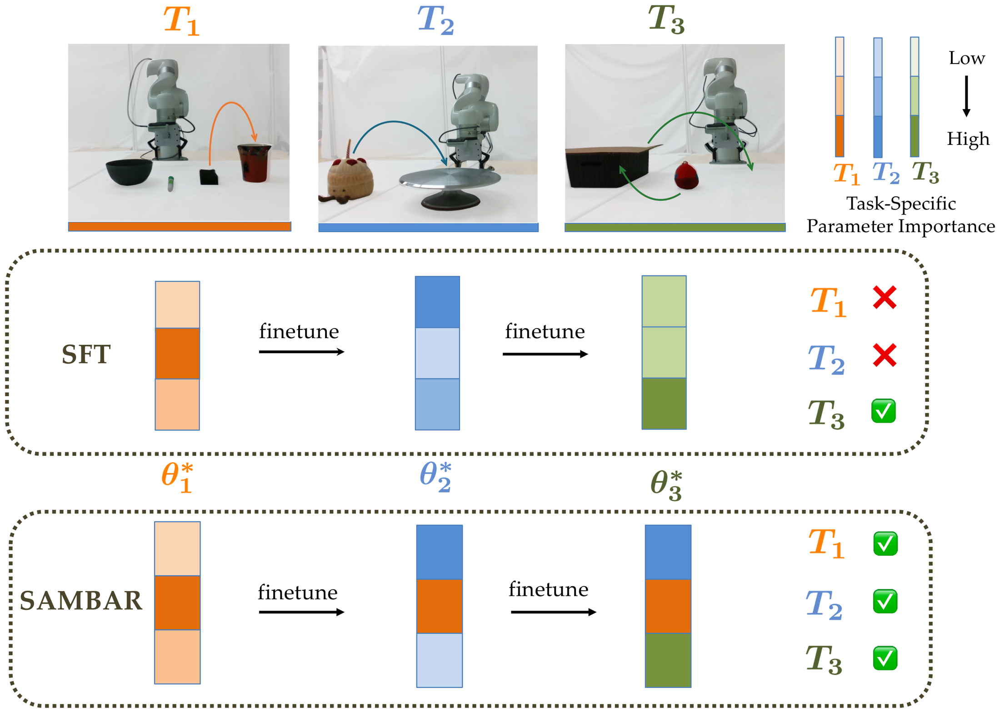
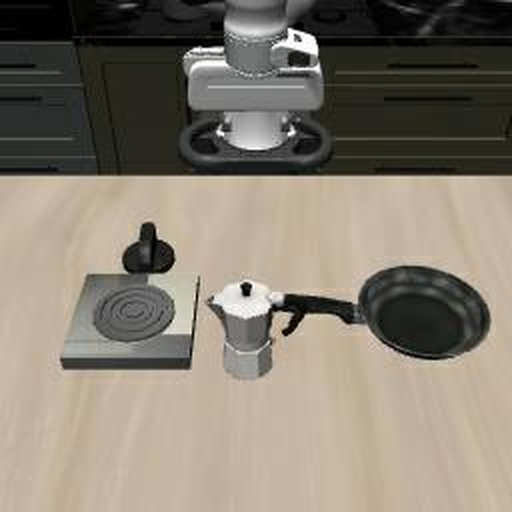
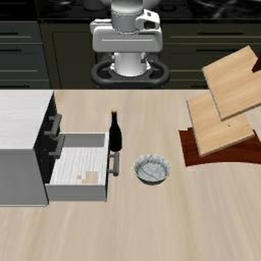
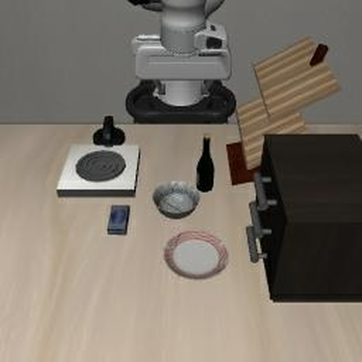
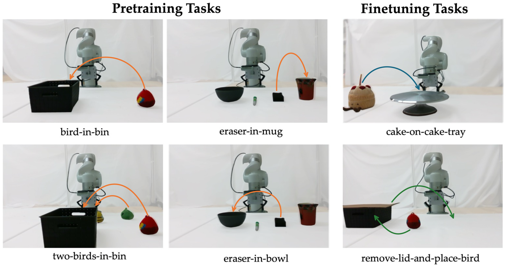

Can we develop a continual learning method that eliminates the need for previous training data while balancing knowledge acquisition and retention?
Formally, we model each task as a POMDP and learn a policy $\pi_\theta(a_t \mid o_t, T)$ mapping an observation $o_t$ and a language task description $T$ to a distribution over actions. Starting from a model pretrained on $m$ tasks, we finetune on $n$ new tasks one at a time, each starting from the optimal parameters of the previous task. For task $T_i$ with demonstrations $\mathcal{D}_i$ we use the behavior cloning objective
We assume no access to the demonstrations used to pretrain the model, nor to those of any task the policy has already been finetuned on. The goal is a final policy that achieves a high success rate on all $m + n$ tasks.
Our key idea is to stop treating "don't forget" as a penalty to be tuned and start treating it as a constraint to be satisfied. We write continual learning for task $T_i$ as
where $\theta^*_{i-1}$ are the parameters that perform well on the $m$ pretraining tasks together with the $i-1$ finetuning tasks completed so far. We solve this with the method of multipliers, which forms the augmented Lagrangian and alternates a primal update with a dual ascent step:
The dual variable $u$ accumulates the violation across iterations and feeds it back into the primal objective, so the longer a violation persists, the more it costs. A fixed penalty has no such memory and settles at a compromise; here the price keeps rising until the constraint is satisfied. The penalty is therefore dynamic rather than static.
The constraint above treats every parameter alike, which makes it too rigid: as we show in our ablation (SAMBAR w/o importance), the model does not forget the previous task, but it also cannot learn the new one. To relax it, we selectively anchor only the parameters that matter to the earlier tasks, and leave the rest free to move.
We replace the constraint $\theta_i = \theta^*_{i-1}$ with an importance-weighted anchor $z$ — an average of the current parameters $\theta_i$ and the previous ones $\theta^*_{i-1}$, weighted by how important each parameter is to each set of tasks:
We estimate importance by the mean squared gradient of the task loss over the $N_B$ samples in a batch — the diagonal of the empirical Fisher Information Matrix, the same quantity EWC uses. We use only the diagonal because it is easily batched and is far more compute- and memory-efficient:
Putting the anchor into the method of multipliers gives SAMBAR. At optimization step $k$, the primal, dual, and anchor updates are:
Once finetuning on $T_i$ finishes, $T_i$ itself becomes a task the policy must not forget. We fold its importance into the old tasks' importance matrix, weighting each term by the number of tasks it covers, $\;\bar{\Omega}_i := \big((m+i-1)\,\bar{\Omega}_{i-1} + \Omega_i\big)/(m+i)$. Repeating this at every task is what lets SAMBAR keep learning sequentially. Note that we never recompute $\bar{\Omega}_{i-1}$ from earlier data — we only need a single importance matrix $\bar{\Omega}_0$ released with the pretrained model. This costs one matrix of fixed size, regardless of how many tasks the policy learns, and is far cheaper to store and distribute than the pretraining demonstrations.
We evaluate on LIBERO, a benchmark for knowledge transfer in multitask and lifelong robot learning. We use $\pi_{0.5}$ as our base pretrained policy. Since it cannot perform LIBERO tasks out of the box, we first pretrain it on a set of in-environment tasks, which grounds the policy and gives us a set of tasks against which we can measure forgetting. We study three settings:
We compare against replay-free baselines — SFT, RETAIN (weight interpolation, $\alpha = 0.9$), LoRA, EWC, L2, and Simple Recipe Works — plus the ablation SAMBAR w/o importance. Two further references appear in the tables for context but are left out of the charts: the un-finetuned Pretrained model, and Co-Training, which replays the earlier tasks' demonstrations and so is not a replay-free method.
We report three success rates:
All numbers are percentages averaged over 5 seeds (5 episodes/seed for the broadly pretrained regime, 10 episodes/seed for the narrowly pretrained regime), reported with a 95% confidence interval.



pot-on-stove, then
bowl-in-drawer, then bottle-on-rack, in the order shown. The first two are
long-horizon tasks; the third is a goal task.
This is the setting the paper is really about. Starting from the policy pretrained on 32 tasks, we finetune
on pot-on-stove, then bowl-in-drawer, then bottle-on-rack, and
evaluate after all three.
Every baseline succeeds on pot-on-stove exactly 0.0% of the time — all of
them have completely forgotten the first task they learned, while still performing the most recent task
well. SAMBAR is the only method that strikes the balance: it still performs pot-on-stove 84.0%
of the time and bowl-in-drawer 70.0% of the time after learning a third task on top of them,
while retaining 88.2% on the pretraining tasks and learning bottle-on-rack at 82.0%. The
ablation without importance weighting retains the most of any method (89.8%) but learns almost
nothing, ending at 0.0% on the first two tasks and 4.0% on the third.
| Method | Pretrain SR ↑ | Success on each newly learned task ↑ | Weighted Avg SR ↑ | ||
|---|---|---|---|---|---|
| pot-on-stove | bowl-in-drawer | bottle-on-rack | |||
| Co-Training | 95.4 ±1.0 | 100.0 ±0.0 | 98.0 ±5.6 | 88.0 ±13.6 | 95.4 |
| SFT | 12.9 ±1.9 | 0.0 ±0.0 | 60.0 ±21.5 | 84.0 ±11.1 | 15.9 |
| RETAIN | 17.4 ±0.7 | 0.0 ±0.0 | 68.0 ±16.2 | 96.0 ±6.8 | 20.6 |
| LoRA | 45.4 ±1.3 | 0.0 ±0.0 | 18.0 ±13.6 | 92.0 ±10.4 | 44.6 |
| EWC | 0.0 ±0.0 | 0.0 ±0.0 | 0.0 ±0.0 | 100.0 ±0.0 | 2.9 |
| L2 | 58.3 ±2.6 | 0.0 ±0.0 | 42.0 ±34.5 | 80.0 ±24.8 | 56.7 |
| Simple Recipe Works | 44.4 ±3.2 | 0.0 ±0.0 | 36.0 ±14.2 | 90.0 ±8.8 | – |
| SAMBAR w/o importance | 89.8 ±0.8 | 0.0 ±0.0 | 0.0 ±0.0 | 4.0 ±6.8 | 82.2 |
| SAMBAR (ours) | 88.2 ±2.3 | 84.0 ±6.8 | 70.0 ±15.2 | 82.0 ±16.2 | 87.4 |
Single-task finetuning is the precondition for sequential learning: a method that already forgets after one task cannot learn more tasks in sequence. Pretraining breadth matters a great deal. From a broadly pretrained policy (117 tasks) the policy is general enough that forgetting is mild and most methods do fine — though SAMBAR still has the highest Weighted Avg SR on two of the three tasks. From a narrowly pretrained policy (32 tasks), forgetting becomes severe: every baseline drops below 80% Pretrain SR on both tasks, while SAMBAR is the only method to stay around 90% and still learn the new task.
pot-on-stovebowl-in-drawer| Method | Pretrain SR ↑ | Finetune SR ↑ | Weighted Avg SR ↑ |
|---|---|---|---|
| Finetune task: pot-on-stove | |||
| Pretrained (no finetuning) | 93.9 ±1.4 | 6.0 ±16.7 | – |
| Co-Training | 93.8 ±1.3 | 94.0 ±6.8 | 93.8 |
| SFT | 56.1 ±2.6 | 96.0 ±6.8 | 57.3 |
| RETAIN | 66.5 ±2.1 | 94.0 ±11.1 | 67.3 |
| LoRA | 75.4 ±1.8 | 100.0 ±0.0 | 76.2 |
| EWC | 47.1 ±1.4 | 96.0 ±11.1 | 48.6 |
| L2 | 71.5 ±2.2 | 74.0 ±16.7 | 71.6 |
| Simple Recipe Works | 84.0 ±1.3 | 86.0 ±16.7 | – |
| SAMBAR w/o importance | 91.8 ±1.4 | 4.0 ±6.8 | 89.1 |
| SAMBAR (ours) | 89.7 ±1.7 | 86.0 ±18.8 | 89.6 |
| Finetune task: bowl-in-drawer | |||
| Pretrained (no finetuning) | 93.9 ±1.4 | 0.0 ±0.0 | – |
| Co-Training | 93.1 ±1.7 | 100.0 ±0.0 | 93.3 |
| SFT | 23.1 ±1.4 | 100.0 ±0.0 | 25.4 |
| RETAIN | 27.4 ±1.8 | 96.0 ±6.8 | 29.5 |
| LoRA | 74.0 ±3.0 | 100.0 ±0.0 | 74.8 |
| EWC | 19.6 ±0.9 | 90.0 ±12.4 | 21.7 |
| L2 | 64.9 ±2.3 | 78.0 ±16.2 | 65.3 |
| Simple Recipe Works | 74.1 ±1.2 | 92.0 ±10.4 | – |
| SAMBAR w/o importance | 90.6 ±1.9 | 38.0 ±30.9 | 89.0 |
| SAMBAR (ours) | 91.8 ±1.2 | 96.0 ±6.8 | 91.9 |
pot-on-stoveitems-into-basketmugs-on-plates| Method | Pretrain SR ↑ | Finetune SR ↑ | Weighted Avg SR ↑ |
|---|---|---|---|
| Finetune task: pot-on-stove | |||
| Pretrained (no finetuning) | 93.2 ±1.2 | 4.0 ±11.1 | – |
| SFT | 89.0 ±0.9 | 100.0 ±0.0 | 89.1 |
| RETAIN | 89.7 ±1.2 | 100.0 ±0.0 | 89.8 |
| LoRA | 88.1 ±0.6 | 100.0 ±0.0 | 88.2 |
| EWC | 89.5 ±1.4 | 100.0 ±0.0 | 89.6 |
| L2 | 84.8 ±0.7 | 84.0 ±11.1 | 84.8 |
| SAMBAR w/o importance | 89.7 ±1.4 | 56.0 ±32.4 | 89.5 |
| SAMBAR (ours) | 91.9 ±0.9 | 92.0 ±13.6 | 91.9 |
| Finetune task: items-into-basket | |||
| Pretrained (no finetuning) | 93.2 ±1.2 | 0.0 ±0.0 | – |
| SFT | 93.2 ±1.5 | 100.0 ±0.0 | 93.3 |
| RETAIN | 93.3 ±2.1 | 96.0 ±11.1 | 93.4 |
| LoRA | 93.4 ±0.9 | 100.0 ±0.0 | 93.5 |
| EWC | 93.5 ±1.2 | 100.0 ±0.0 | 93.6 |
| L2 | 93.8 ±1.2 | 92.0 ±13.6 | 93.8 |
| SAMBAR w/o importance | 94.3 ±0.5 | 36.0 ±11.1 | 93.8 |
| SAMBAR (ours) | 94.3 ±1.3 | 100.0 ±0.0 | 94.4 |
| Finetune task: mugs-on-plates | |||
| Pretrained (no finetuning) | 93.2 ±1.2 | 0.0 ±0.0 | – |
| SFT | 80.7 ±2.0 | 96.0 ±11.1 | 80.8 |
| RETAIN | 85.4 ±1.1 | 88.0 ±22.2 | 85.5 |
| LoRA | 91.9 ±1.3 | 100.0 ±0.0 | 91.9 |
| EWC | 78.8 ±0.8 | 96.0 ±11.1 | 78.9 |
| L2 | 86.1 ±0.6 | 80.0 ±30.4 | 86.0 |
| SAMBAR w/o importance | 93.2 ±1.2 | 76.0 ±20.8 | 93.1 |
| SAMBAR (ours) | 90.7 ±1.1 | 92.0 ±13.6 | 90.8 |
We ask whether a policy running on real hardware can keep learning new tasks without forgetting the ones it already knows. We run on an xArm7 manipulator and collected 50 tele-operated demonstrations for each of six tabletop tasks. Four serve as pretraining tasks for $\pi_{0.5}$, and two are held out as finetuning tasks. We count a rollout as successful only if the task is completed in full, awarding no partial credit, and compare against one representative of each baseline family: SFT, RETAIN ($\alpha = 0.5$), and EWC.

Both policies were finetuned on cake-on-cake-tray and then on
remove-lid-and-place-bird, in sequence. Every video below is the same final policy
evaluated on four different tasks — two it was just taught, and two it learned during pretraining and
must not forget. Videos play at 10× speed.
Starting from the policy pretrained on the four tasks, we finetune on cake-on-cake-tray and then
on remove-lid-and-place-bird, and evaluate all six tasks at the end. Every method remembers the
pretraining tasks reasonably well here (90–100%), so the methods separate on whether they ever
acquire the second task. RETAIN cannot perform the long-horizon
remove-lid-and-place-bird at all, failing all 5 rollouts, and EWC manages only 2 of 5. SAMBAR
succeeds on 4 of 5 rollouts of both finetune tasks while keeping all four pretraining tasks at 100%.
| Method | Pretraining tasks ↑ | Pretrain SR ↑ | Finetune tasks ↑ | Weighted Avg SR ↑ | ||||
|---|---|---|---|---|---|---|---|---|
| bird-in-bin | two-birds-in-bin | eraser-in-mug | eraser-in-bowl | cake-on-cake-tray | remove-lid-and-place-bird | |||
| SFT | 5/5 | 5/5 | 5/5 | 3/5 | 90.0 | 4/5 | 3/5 | 83.3 |
| RETAIN ($\alpha=0.5$) | 5/5 | 5/5 | 4/5 | 4/5 | 90.0 | 5/5 | 0/5 | 76.7 |
| EWC | 5/5 | 5/5 | 5/5 | 5/5 | 100.0 | 4/5 | 2/5 | 86.7 |
| SAMBAR (ours) | 5/5 | 5/5 | 5/5 | 5/5 | 100.0 | 4/5 | 4/5 | 93.3 |
On cake-on-cake-tray, SAMBAR succeeds on all 5 rollouts of all four pretraining tasks
and all 5 rollouts of the new task. SFT forgets the long-horizon two-birds-in-bin and
the goal task eraser-in-bowl. On the long-horizon
remove-lid-and-place-bird, RETAIN and EWC both retain the pretraining tasks well but
never learn the new task at all, failing all 5 rollouts; SFT shows the opposite failure,
acquiring the finetuning task but forgetting the pretraining ones. SAMBAR is the only method that keeps a
high success rate on all four pretraining tasks while still acquiring the new one.
cake-on-cake-trayremove-lid-and-place-bird| Method | Pretraining tasks ↑ | Pretrain SR ↑ | Finetune SR ↑ | Weighted Avg SR ↑ | |||
|---|---|---|---|---|---|---|---|
| bird-in-bin | two-birds-in-bin | eraser-in-mug | eraser-in-bowl | ||||
| Finetune task: cake-on-cake-tray | |||||||
| SFT | 4/5 | 1/5 | 5/5 | 2/5 | 60.0 | 5/5 | 68.0 |
| RETAIN ($\alpha=0.5$) | 5/5 | 4/5 | 3/5 | 5/5 | 85.0 | 5/5 | 88.0 |
| EWC | 5/5 | 4/5 | 5/5 | 2/5 | 80.0 | 4/5 | 80.0 |
| SAMBAR (ours) | 5/5 | 5/5 | 5/5 | 5/5 | 100.0 | 5/5 | 100.0 |
| Finetune task: remove-lid-and-place-bird | |||||||
| SFT | 5/5 | 4/5 | 4/5 | 3/5 | 80.0 | 5/5 | 84.0 |
| RETAIN ($\alpha=0.5$) | 5/5 | 5/5 | 3/5 | 5/5 | 90.0 | 0/5 | 72.0 |
| EWC | 5/5 | 5/5 | 3/5 | 5/5 | 90.0 | 0/5 | 72.0 |
| SAMBAR (ours) | 5/5 | 5/5 | 5/5 | 5/5 | 100.0 | 4/5 | 96.0 |
We presented SAMBAR, a replay-free method for continual VLA finetuning that combines importance-weighted parameter anchoring with the method of multipliers. On sequential LIBERO tasks, SAMBAR achieves 88.2% success on pretraining tasks and 78.7% average success on three newly learned tasks, while every evaluated baseline completely forgets the first finetuning task. On hardware, it retains 100% success on four pretraining tasks and achieves 80% on each of two sequentially learned tasks. These results demonstrate the balance \methodname\ provides between knowledge acquisition and retention using stored parameters and importance estimates.
Future work will let the policy improve from its own rollouts, updating on the experience it collects without losing the tasks it already performs.
@article{shrivastava2026sambar,
title = {SAMBAR: Selective Anchoring via Method of Multipliers for Balanced
Knowledge Acquisition and Retention in Vision-Language-Action Models},
author = {Shrivastava, Aayushi and Zhou, Xunlan and Zhao, Hongrui and
Chen, Ziyu and Mehr, Negar},
year = {2026}
}